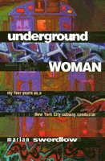

<body bgcolor="#FFFFFF" text="#000000" link="#0000FF" vlink="#CC0000" alink="#CC0000"><center><hr width="350" size="1" align="center" noshade>The strange world of the New York subways by one of the first women to work as a conductor<hr width="350" size="1" align="center" noshade><p><a href="https://cdcshoppingcart.uchicago.edu/Cart/ChicagoBook.aspx?ISBN=9781566396097&&PRESS=temple" target="_top">Buy this book!</a> | <a href="https://cdcshoppingcart.uchicago.edu/Cart/Cart.aspx?PRESS=temple" target="_top">View Cart</a> | <a href="https://cdcshoppingcart.uchicago.edu/Cart/Cart.aspx?PRESS=temple" target="_top">Check Out</a></p><p></p></center><!--none//--><h1>Underground Woman</h1>
<H2>My Four Years as a New York City Subway Conductor</H2>
<h3>Marian Swerdlow</h3>
<P>cloth 1-56639-609-3 $66.50, Mar 98, <FONT COLOR=#990033>Out of Stock Unavailable</FONT>
<br>paper 1-56639-610-7 $30.95, Mar 98, <FONT COLOR=#990033>Available</FONT>
<BR> 272 pp
6x9
1&nbsp;map(s) 1&nbsp;figure
</P><p>Take a wild ride through the New York City subway system with author Marian Swerdlow, one of the first women subway conductors. In the days when subway cars were canvas for graffiti murals and there were no toilets for women employees, Swerdlow trained in Manhattan's underworld of tunnels and learned how to cope with the accompanying dangers and frustrations. Her fascinating insider's account from four years on the job is laden with anecdotes that range from the funny to the painful to the absurd.
<p>From her fellow employees, she got grief and harassment, but also camaraderie and love-and a distinct subway lingo that permeates her prose. At all hours of the day and night, New Yorkers in their glorious diversity rode her subway cars. Some spat on her and assaulted her; others were supportive and cheered her on. A white woman in a mostly minority male workplace, Swerdlow helped edit a rank-and-file newsletter, "Hell on Wheels," and tried to organize for better working conditions, confronting the Kafkaesque Transit Authority bureaucracy and complacent union leadership.
<p>This book is full of the experiences that give New York City its edge-the rush hour, crime, medical emergencies, fires in subway cars, floods in subway tunnels, and confrontation of ethnic groups. The conductor is the person who hears what New Yorkers have to say about the quality of life in the Big Apple. And Swerdlow is a narrator with attitude, who has her own words for the subway system of today, including the new standards of politeness that riders are supposed to observe. Includes a glossary of over 140 subway terms.
<BR>&nbsp;<h2>Excerpt</h2><P>Excerpt available at <a href="http://www.temple.edu/tempress">www.temple.edu/tempress</a></p>
<BR>&nbsp;<h2>Reviews</h2>
<p><I>"[A] fascinating story of not only a period in time when the New York Subway was perhaps at its low point (the early 1980s) but also a time when few women were employed at front-line transit positions."</I><br>&#151<b><I>Public Transport </I></b>
<BR>&nbsp;<h2>Contents</h2><P>
<p>Acknowledgments
<br>1. Introduction
<br>2. More Than Door Openers
<br>3. Woodlawn
<br>4. Crew Room Cowboys
<br>5. Health and Safety
<br>6. Greatness
<br>7. Hell on Wheels
<br>8. Rejection
<br>9. Lackluster
<br>10. Greater Greatness
<br>11. Miscellaneous
<br>12. Coworkers
<br>13. Characters and Cronies
<br>14. Riders and Conductors
<br>15. Transit Worker Wit and Wisdom
<br>16. Why I Left
<br>17. The More Things Change...
<br>Afterword
<br>Glossary
</P><BR>&nbsp;<H2>About the Author(s)</H2>
<table><tr><td valign="top"><img src="/tempress/authors/1303_au.gif" height="90" width="75"></td><td width="100%" valign="middle"><p><B>Marian Swerdlow</B> teaches high school social studies in New York City. After working as a subway conductor, she taught sociology at the State University College at Buffalo. Swerdlow was born and grew up in the Bronx.</P></td></tr></table>
<BR><H2>Subject Categories</H2>
<p><A HREF="/tempress/general.html" TARGET="_top">General Interest</a>
<BR><A HREF="/tempress/labor.html" TARGET="_top">Labor Studies and Work</a>
<BR><A HREF="/tempress/women.html" TARGET="_top">Women's Studies</a>
</p>
<BR><h2 class="inpageheading">In the series</H2>
<P><I><a href="http://www.temple.edu/tempress/labor_change.html" onMouseOver="window.status='Click for other books in this series!'; return true;" onMouseOut="window.status=''; return true;" target="_top">Labor and Social Change</a></i>, edited by Paula Rayman and Carmen Sirianni.
</p><p><i>Labor and Social Change</i>, edited by Paula Rayman and Carmen Sirianni, includes books on workplace issues like worker participation, quality of work life, shorter hours, technological change, and productivity, as well as union and community organizing and ethnographies of particular occupations.</p>
<p align="center"><a href="https://cdcshoppingcart.uchicago.edu/Cart/ChicagoBook.aspx?ISBN=9781566396097&&PRESS=temple" target="_top">Buy this book!</a> | <a href="https://cdcshoppingcart.uchicago.edu/Cart/Cart.aspx?PRESS=temple" target="_top">View Cart</a> | <a href="https://cdcshoppingcart.uchicago.edu/Cart/Cart.aspx?PRESS=temple" target="_top">Check Out</a></p><p><font face="Arial" size="1"><a href="copyright.html" onMouseOver="window.status='Web Copyright Policy';return true;" onMouseOut="window.status=''" title="Web Copyright Policy">&copy;</a> 2015 <a href="http://www.temple.edu" target="new" onMouseOver="window.status='Link to Temple University home page';return true;" onMouseOut="window.status=''" title="Link to Temple University home page">Temple University</a>. All Rights Reserved. http://www.temple.edu/tempress/titles/1303_reg.html</font></p>